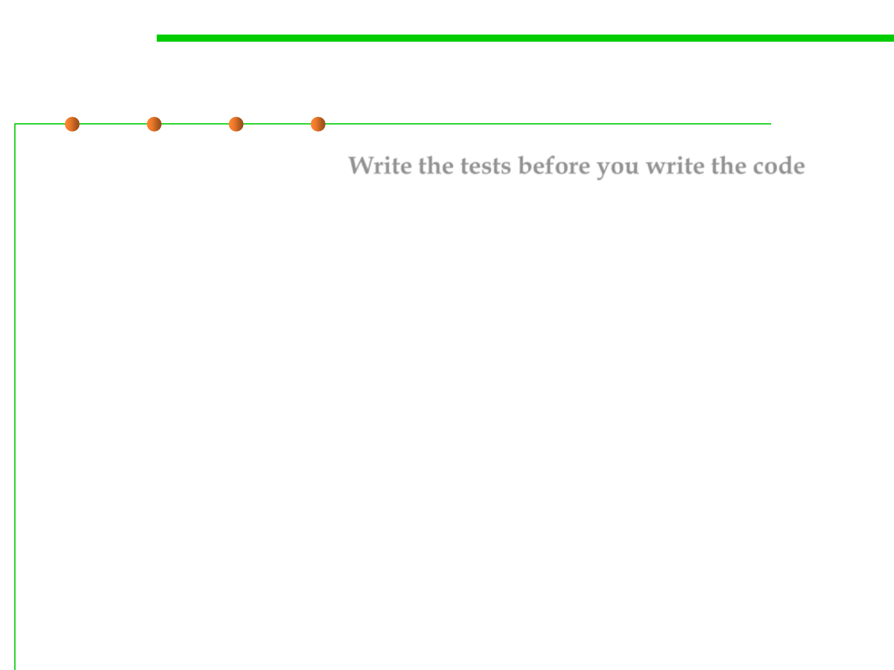

Test-First Programming
7.5 Testing and Test-First Programming
▪ Test-first programming: Write the tests before you write the code.
▪ Motivation
– Test early and often. 尽早并经常测试
– Don’t leave testing until the end, when you have a big pile of unvalidated
code. Leaving testing until the end only makes debugging longer and
more painful, because bugs may be anywhere in your code. 不要把测试留
到最后
– It’s far more pleasant to test your code as you develop it. 边开发边测试
▪ In test-first-programming, the development of a single function
proceeds in this order:
– Write a specification for the function. 写方法的规格说明
– Write tests that exercise the specification. 写符合规格说明的测试
– Write the actual code. Once your code passes the tests you wrote, you’re
done. 写代码→测试。